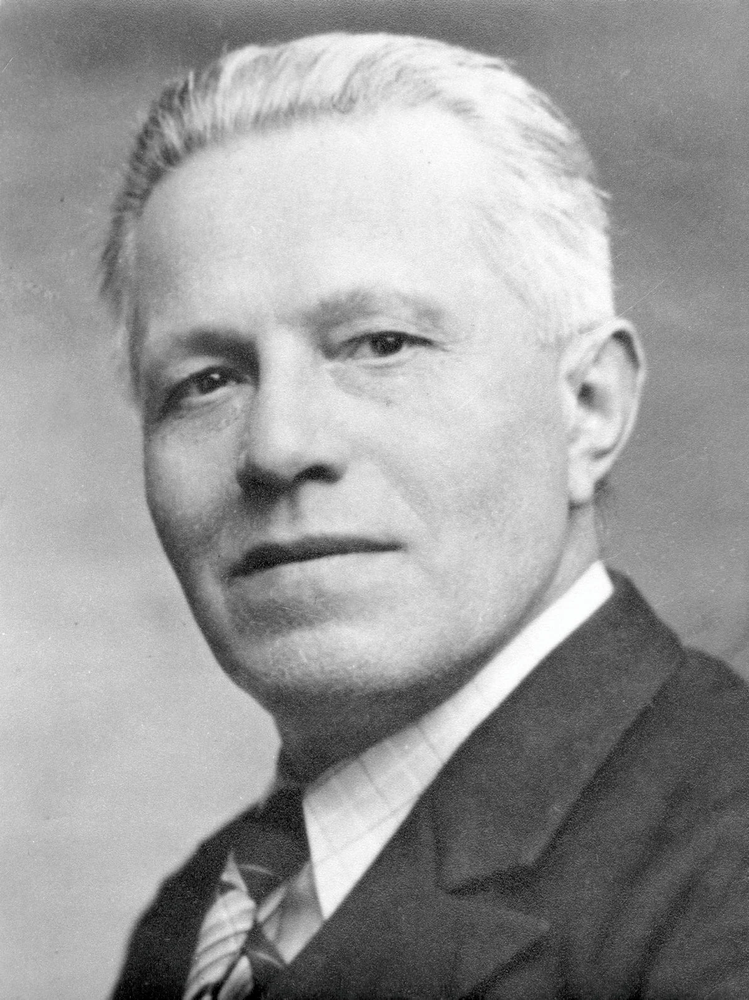

Annonce fédérale
À Niort, appel à l’hommage à Pierre Sémard le 8 mai
Date indiquée par Facebook · 3 mai 2022
Repères éditoriaux
Le rendez-vous était annoncé à midi devant la plaque de la gare. Le compte rendu et les photographies figurent dans la publication associée.
Texte conservé avec la publication
Hommage à Pierre SEMARD le Dimanche 8 mai à 12 heures devant la plaque commémorative située à la Gare de Niort
Le Parti Communiste Français s’est toujours opposé aux guerres capitalistes.
Lors de la seconde guerre mondiale, le PCF et ses militant.es ont courageusement combattu le fascisme et résisté à l’occupation nazie, y compris par les armes.
Aujourd’hui les idées d’extrême droite irriguent l’ensemble de la société française, le PCF sera toujours présent pour le combattre au quotidien dans les urnes, dans la rue et dans les bois !
En mémoire de nos camarades combattants et résistants, en mémoire de ceux qui sont morts pour un idéal communiste et de liberté, le Parti Communiste des Deux-Sèvres a symboliquement choisi de commémorer le 80ème anniversaire de la mort de notre camarade Pierre SEMARD, fusillé par les Allemands à la prison d’Evreux le 7 mars 1942.
Pierre SEMARD a été secrétaire général du Parti Communiste Français et secrétaire général de la Fédération CGT des cheminots.
LE PCF EN DEUX-SÈVRES VOUS INVITE DONC À PARTICIPER À CET HOMMAGE ORGANISÉ LE 8 MAI 2022 À 12 HEURES
DEVANT LA PLAQUE COMMÉMORATIVE SITUÉE À LA GARE DE NIORT.
Cet hommage sera suivi d’une rencontre au siège de la Fédération du PCF en Deux Sèvres où vous pourrez découvrir une exposition sur la vie militante de Pierre SEMARD.

Sources
Archive rouge · export Facebook · AR-0002-FB-01891
À lire aussi · À Niort, hommage à Pierre Sémard à la gare le 8 mai 2022